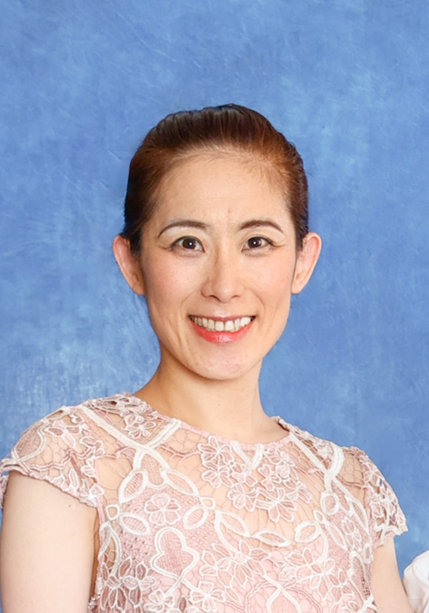
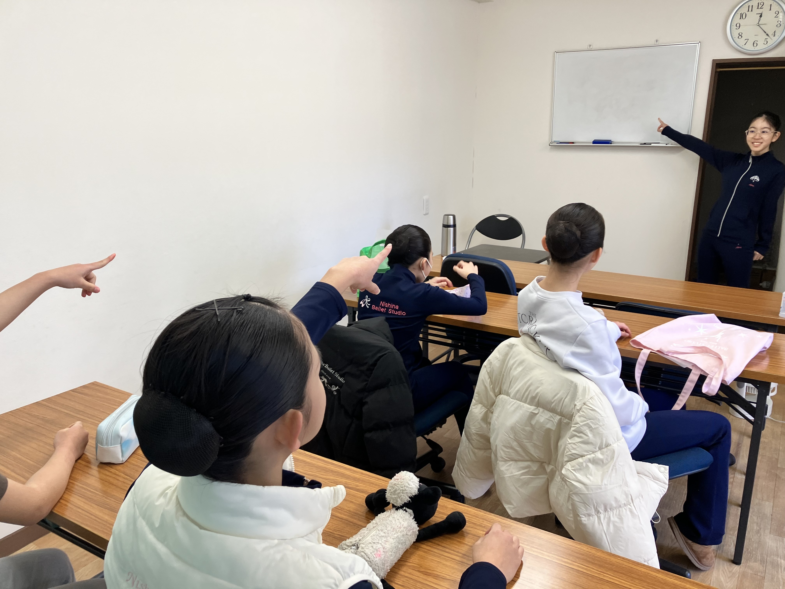
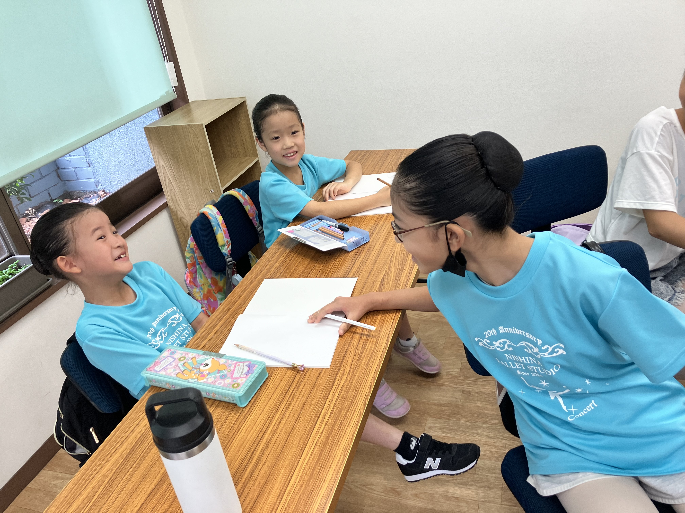

当教室について
高島平に本校、中央区に月島校、大東文化大学附属青桐幼稚園の課外教室にクラスを開講している、生徒約70名が通うクラシックバレエ教室です。
バレエのレッスンを通し、踊ることの楽しさはもとより挨拶などの生活習慣を身に付け、自主性のある子になるよう指導しています。
また、定期的に板橋区立文化会館大ホールにて全員参加の発表会が開催されます。
講師紹介

3歳から地元高島平でクラシックバレエを始める。
22歳でミヤキバレエ団に入団し、幼稚園クラスから成人クラスまでを指導。
2009年に退団し、現在までにしなバレエ教室を運営している。
学習支援


バレエの練習以外に姉妹校である大助塾で学習支援を行っています。夏期講習や冬期講習等バレエの練習の前後に徒歩圏内にある大助塾にて勉強を行っています。